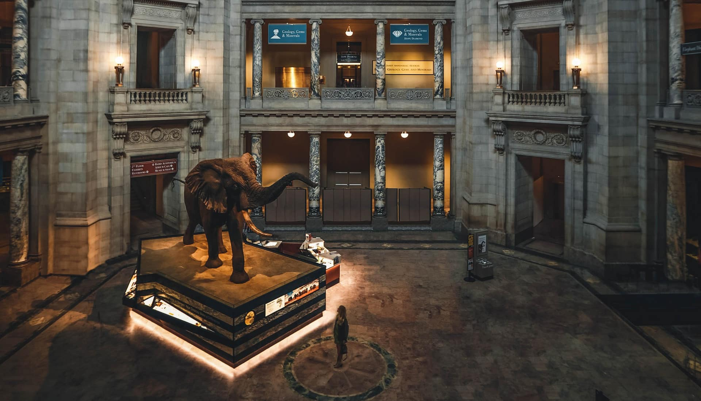
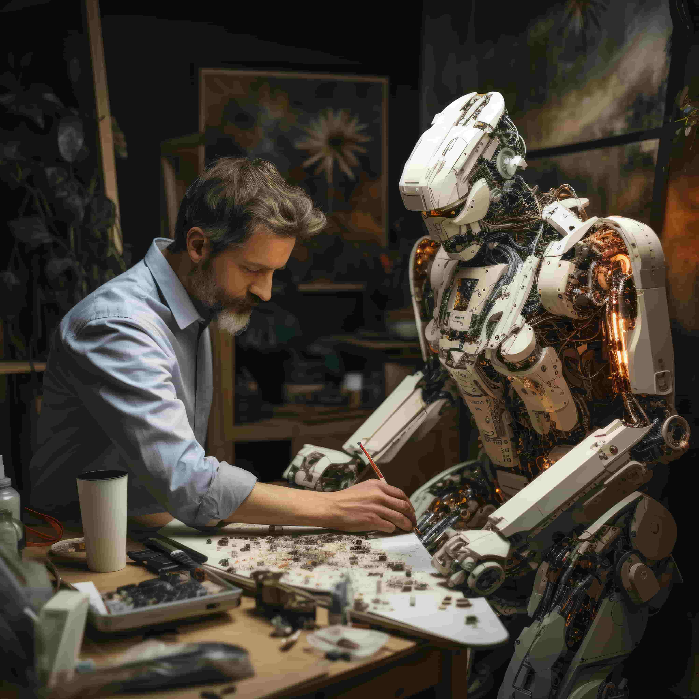

CONTRIBUTION

SUPPORT
There are various ways you can support the museum and help us continue our mission of providing accessible and engaging experiences for the entire community. Donations are greatly appreciated and play a vital role in keeping the museum open and thriving. Your contributions enable us to maintain our exhibits, develop new educational programs, and enhance the overall visitor experience.
In addition to financial support, you can also help us by donating items of interest to the museum’s collections. If you possess an item or collection that you believe would enrich our offerings and delight our visitors, please reach out to our Collections Department. Our dedicated team will be happy to assist you and discuss the potential for including your donation in our museum.
Every contribution, whether monetary or material, helps us foster a love for learning and discovery within our community. Thank you for considering supporting the museum!

VOLUNTEER
A dedicated group of individuals generously volunteers their time and effort to keep our displays in excellent condition, ensuring that they are always ready for visitors to come and enjoy. Volunteering at the museum comes with its perks, including the unique opportunity to see behind the scenes of a working museum, access to staff-only lectures, and participation in a monthly lunch where all staff and volunteers gather to share ideas for future exhibits and strategies for enhancing the museum experience.
You can help in various areas, whether you’re interested in assisting with exhibit maintenance, engaging with visitors, or contributing to educational programs. Your skills and passion can make a meaningful impact on our community.
If you’d like to learn more about how you can get involved and become a part of our volunteer team, please don’t hesitate to contact us. We would love to hear from you and welcome you to our museum family!

INTERSHIPS
Are you interested in working in a museum? Do you enjoy the fun and excitement of sharing the wonders of nature with people? If so, you could be just the right candidate for an internship at our museum!
As an intern, you’ll have the opportunity to learn from a diverse group of academics and passionate professionals who are dedicated to science and education. You’ll gain hands-on experience in various aspects of museum operations, including exhibit development, educational programming, and community engagement.
This internship is a fantastic way to enhance your skills, expand your knowledge, and make valuable connections in the field of science and education. If you’re eager to contribute to our mission and inspire others with the wonders of the natural world, we invite you to apply for an internship with us!